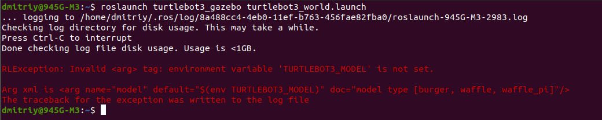
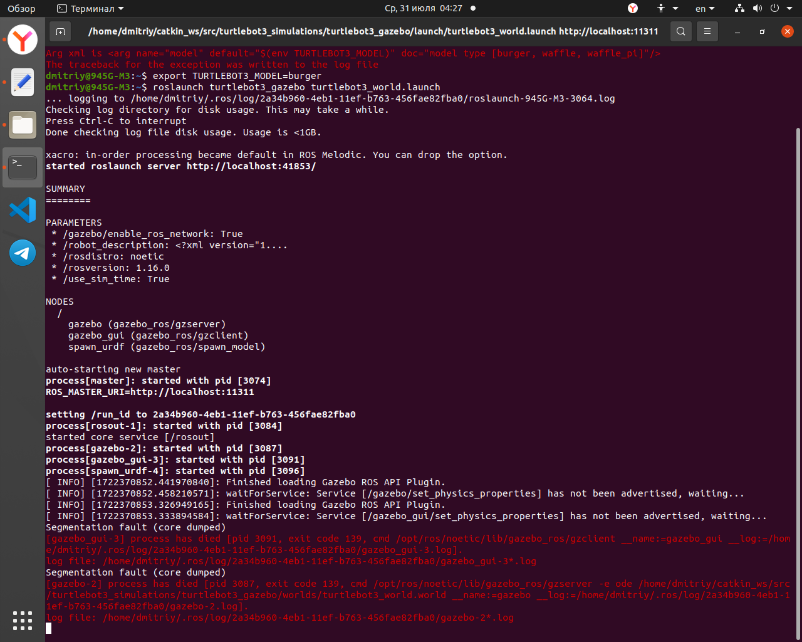

Потом со страницы Turtlebot3 simulation выполняем пункт 6.1.1:
cd ~/catkin_ws/src/
git clone -b noetic-devel https://github.com/ROBOTIS-GIT/turtlebot3_simulations.git
cd ~/catkin_ws && catkin_make
Возникала ошибка, что ros не видел нужный мне уже установленный пакет turtlebot3_gazebo и вообще все пакеты из catkin_ws/src.
Ошибку устранил после того как в файле ~/.bashrc расположил строки в правильном порядке:

Если эти строки в другом порядке расположить, тогда возникает ошибка, что ros не видит пакеты в catkin_ws/src.
export TURTLEBOT3_MODEL=burger
Запускаем в gazebo файл.launch:
roslaunch turtlebot3_gazebo turtlebot3_world.launch
Из-за того что не выполнил вначале export TURTLEBOT3_MODEL=burger возникает ошибка:

Выполнил обе команды, но теперь ошибка:

Сказали, что проблема в видеокарте.
Запуск Gazebo через MobaXterm в компьютере с ОС Windows7.
Запуск Gazebo через docker-контейнер
Запуск Gazebo через другие программы